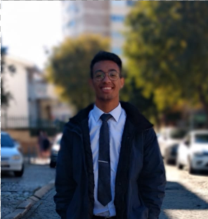

Vitor Rodrigues Sampaio Pinto | WDD 130
I started as a programmer in Feb 2022, even though I didn’t have professional experience I did work on solo projects and also did some co-op work (not paid) to have more experience in the area, my projects have been focused on Frontend and I always try to refine my skills for a better interface and experience. Even if I don't know a program I can adapt quickly and I can work things out, I like to work with different technologies.